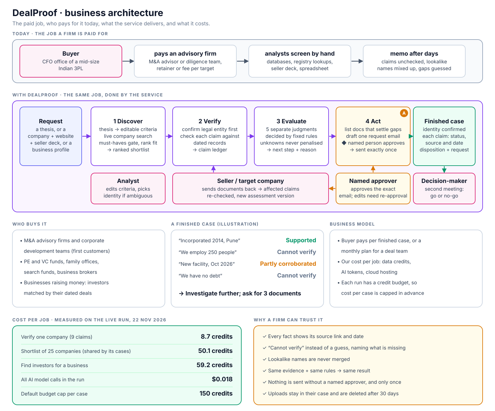
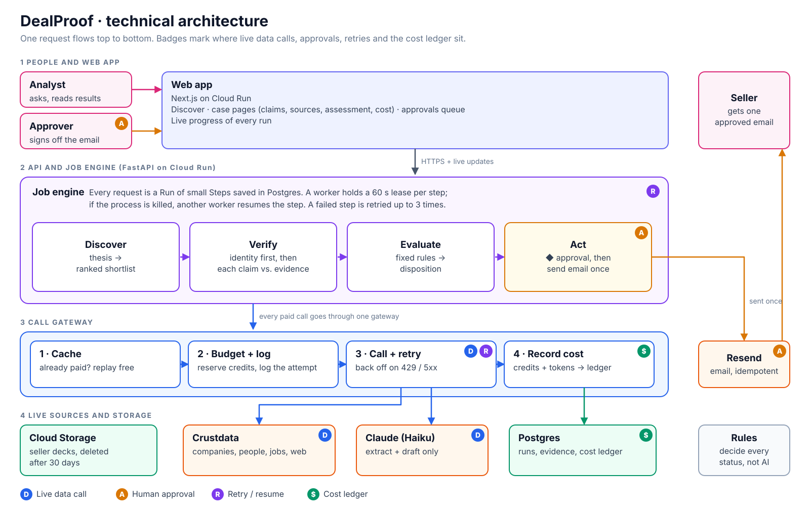

DealProof does the job a diligence analyst is paid for before the second meeting with a seller. It turns a buyer's thesis into a shortlist of real companies, confirms which legal entity each one is, checks every claim in the seller's deck against independent dated records, and reaches a disposition by published rules. It then drafts the one request to the seller that would settle the open questions, which a named person approves before it is sent, once.
The client is a mid-size Indian 3PL whose CFO office is looking at buying or investing in regional logistics, warehousing and supply-chain technology companies. Today that office pays an M&A advisory firm, a buy-side diligence team or a venture scout, on a retainer or per target, to do the first pass. An analyst searches company databases, works out which legal entity is meant, reads the seller's deck, checks what can be checked and writes a memo. This takes days per target. Deck claims go unchecked, lookalike names get mixed up, and missing facts get filled in by guesswork. DealProof does that whole first pass. Formal financial, legal and tax diligence still comes afterwards.
| Input | A thesis in plain words; or a company name and website with optional seller documents (PDF) or typed claims; or a business profile, to find investors whose dated funding record fits it. |
|---|---|
| Finished result | A screening case with confirmed identity, a claim ledger (six statuses, each with source link, exact passage or field, and record date), five separate judgments, one of four dispositions with the rule that decided it, an approved seller request sent once, and the cost of every call. |
| Pass mark | Correct identity, or cannot_assess for a lookalike name; every claim status as expected, with cannot_verify (naming the missing document) where no source settles it; every fact sourced and dated; duplicates neither merged nor double-counted; disposition per policy; no email without approval and never twice; within budget, and correct after a kill and restart. |
app/rules with no I/O, no LLM and no clock, so the same records under the same policy version always give the same result.confirmed, identity-dependent checks stay not_checked and the disposition is cannot_assess.Discover. The thesis is extracted into criteria (must-have or preference, by dimension) that the user can edit. Crustdata /company/search runs with hard filters only on fields that are reliably populated, plus an unknown-inclusive or supplemental query for the rest. A tri-state must-have gate (pass/fail/unknown) removes only verified failures. The top N are enriched (/company/enrich, /job/search), gated again, and ranked by fit = Σ weight(met) / Σ weight(assessable), always shown with the share of criteria that could be assessed.
Verify. A run of dependent steps: identity (blocking) → profile → registry evidence, dated events and comparables → claim intake → evidence per claim category (headcount series, leadership at the confirmed company id through /person/search, funding rounds, dated news through /web/search/live and /web/enrich/live) → fact extraction with span validation → status by a per-category rule table. The precedence is not_checked › conflicting_evidence › contradicted › supported › partially_corroborated › cannot_verify.
Evaluate. Five judgments are kept apart. The disposition follows the first matching predicate: identity uncertain or under 30% assessable → cannot_assess; a verified must-have failure, or fit under 40 on at least 60% verified criteria → deprioritise; fit of at least 70 with every required check supported and no contradiction → prioritise; otherwise investigate_further. Each evaluation is an immutable AssessmentVersion with an input-snapshot hash and a computed diff. DecisionFlip re-runs the same rules with open items set to hypothetical states, to show which documents would change the outcome.
Act. Open questions map to the documents that would settle them (team size → dated payroll summary; debt → lender statements), deduplicated. One email is drafted and approved, then sent once. When the seller's documents arrive, the affected claims are re-checked and a new assessment version shows exactly what moved and why.
| Component | Responsibility |
|---|---|
Web app (apps/web) | Next.js App Router. Discover, investors, case pages (identity, claims, sources, assessment and history, request, cost), approvals queue. Calls the API through a same-origin /api proxy, and run progress streams over SSE. |
API (apps/api) | FastAPI routers, named-user sessions, origin checks, rate limits, and case-scoped authorisation on every read path, including files, evidence, cache and exports. |
| Document intake | Validates uploads, extracts text in a sandbox, strips personal details (regex, then LLM-assisted), and stores files in a private GCS bucket under cases/<id>/ with a 30-day lifecycle delete. A deletion record keeps older versions explainable. |
Job engine (app/jobs) | Runs and Steps (pending → running → done | failed | skipped_budget). Claims use SELECT … FOR UPDATE SKIP LOCKED with a 60 s lease, renewed while the step runs, and a fresh lease_token per claim. A periodic sweep and every claim query reclaim expired leases. |
Call layer (app/clients) | One CallOperation for Crustdata and Anthropic: request-hash cache (case-scoped when the request holds private text) → fence check, budget reservation and a call_attempt row in state started → HTTP dispatch with retry → one transaction writing usage, the cost entry and the cache. Provider error text is never stored, only allowlisted error codes. |
Rules (app/rules) | Pure, versioned policy (POLICY.md): claim status tables, fit, sufficiency, company type, disposition precedence, request mapping, DecisionFlip. |
Act (app/act) | Revision-bound approval and a send-once state machine on Resend (state diagram in docs/architecture). |
Retry-After. Crustdata gets up to 3 retries and Anthropic up to 2. Each retry is a separately recorded attempt, so no spend is hidden.not_checked, never a clean result.started attempts are reconciled to unknown cost. Completed calls replay from cache at zero cost.Idempotency-Key, with the exact payload stored and replayed byte for byte. An unknown outcome is reconciled with the provider before any retry. Concurrent sends resolve to one dispatch, and this is tested.call_attempts row (before) and a cost_entries row (after): Crustdata credits_used, Anthropic input and output tokens, and USD from a price table. A lost usage figure is stored as unknown, never as zero.not_checked ("budget reached").SKIP LOCKED lets many workers share one queue without double work, and the shared public-lookup cache stops repeat lookups from being paid twice. Provider rate limits are handled per client with backoff.v1 has no dedicated checks for registered charges or litigation. Those claims appear in the ledger as cannot_verify with the document that would settle them. Private Indian financials are rarely public, so the financial judgment usually reads "not assessed". There is no wall-clock cap per run; time is bounded by per-call timeouts, bounded fan-out and step attempts.

Figure 1. Business architecture. The job the buyer pays a firm for today, the same job done by DealProof from request to finished case, the people in the loop (analyst, named approver, seller, decision-maker), the cost measured on the live showcase run, and the controls a firm relies on before it accepts the output.

Figure 2. Technical architecture. A Next.js web app and a FastAPI service on Cloud Run (asia-south1), with the step worker running in the same image. Pipelines are Runs of idempotent Steps in Neon Postgres. Every paid call goes through one CallOperation (cache, pre-dispatch with fencing and budget, dispatch with retry, finish with cost entry). Badges mark data calls (D), approvals (A), retries (R) and cost-ledger writes ($).